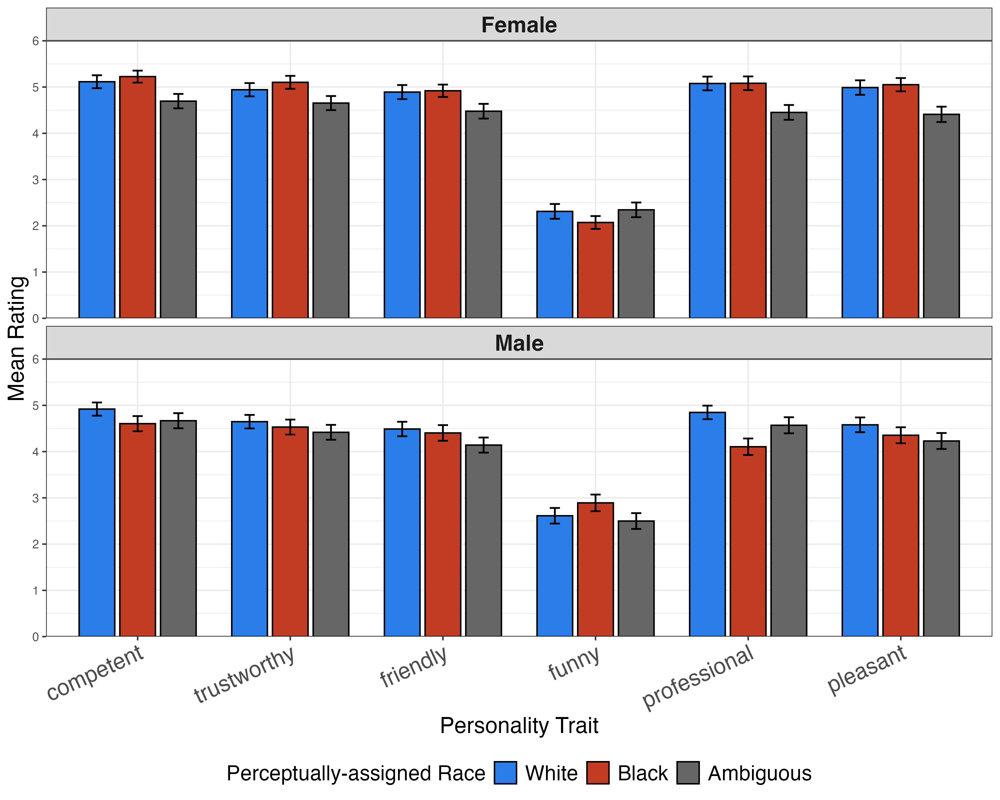
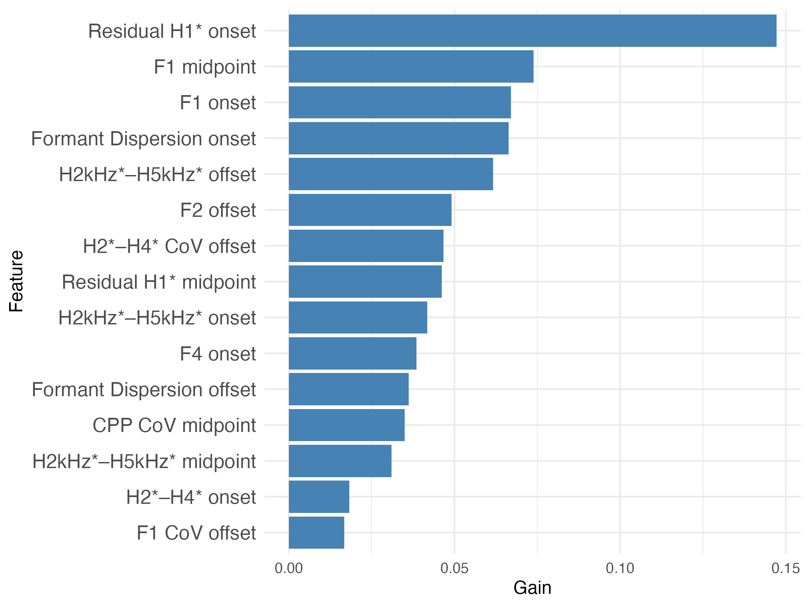

Detecting the perception of race in TTS voice
Code and stimuli available here: GitHub
Companies are beginning to claim that they can encode race in their synthetic voices. We conducted a large-scale perceptual study to test whether listeners actually hear those intended racial identities.
We found that listeners perceived race more consistently in male synthetic voices. We also found that when users did reliably perceive race, they often applied racial stereotypes to those voices. Lastly, we found that perceived race could be effectively parameterized using a low-dimensional set of spectral features.
Listen for yourself
African American synthetic voice
White synthetic voice
Both synthetic voices are male and read the same sentence.


I collaborated on this project with Nicole Holliday (UC Berkeley) and Sarah Creel (UC San Diego).